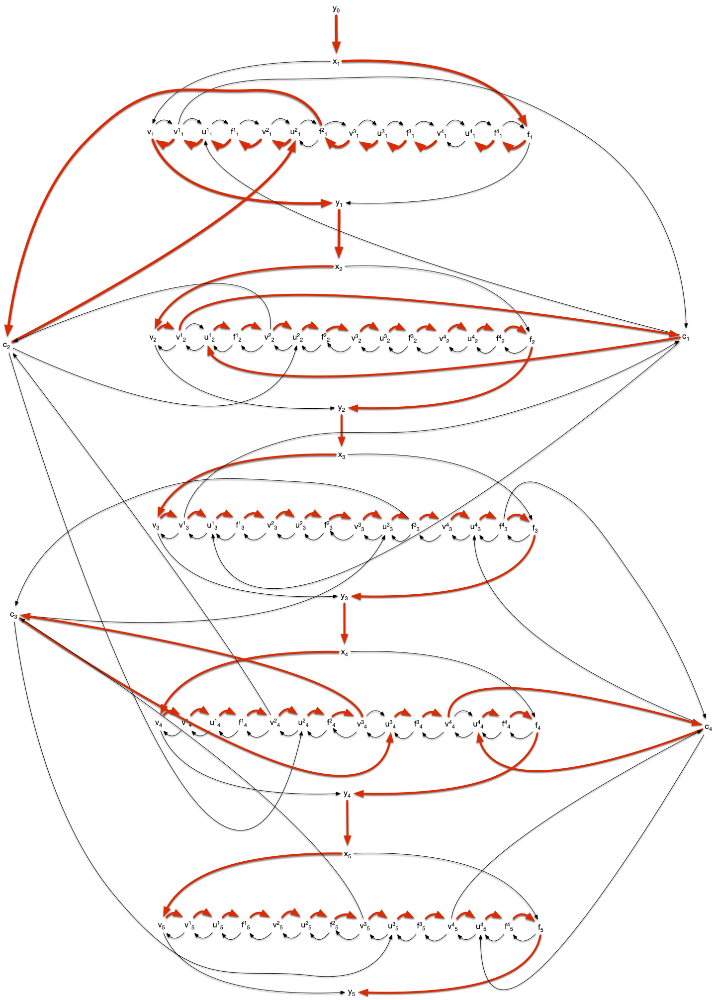
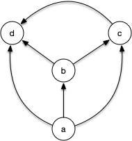
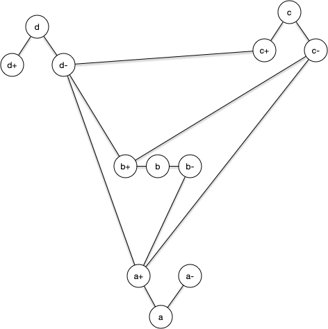
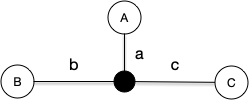
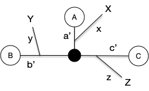
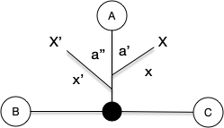
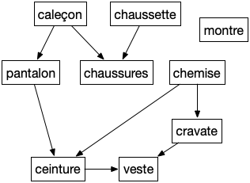

Chemin le plus long
On a vu plusieurs algorithmes permettant de trouver un chemin le plus court entre 2 sommets mais aucun permettant de trouver le chemin élémentaire le plus long :
Problème
- Nom : chemin le plus long
- Entrées : Un graphe (resp. graphe orienté) $G$
- Sortie : Un chemin élémentaire le plus long possible.
Ce problème est clairement relié au problème du chemin hamiltonien :
Montrer que le problème de la recherche d'un chemin hamiltonien est plus facile que la recherche d'un chemin le plus long.
solution
solution
Le plus long chemin élémentaire possible dans un graphe passe par tous les sommets. Donc un chemin élémentaire de longueur $\vert V \vert -1$ est hamiltonien.
Problème pour lequel on a pas non plus vu d'algorithme efficace (ie. polynomial), et pour cause... Ils sont NP-complets.
NP-complétude de la reconnaissance d'un graphe hamiltonien
On a déjà parlé de ces problèmes, formalisons les :
Problème
- Nom : cycle (resp. circuit) hamiltonien
- Entrée : Un graphe (resp. graphe orienté) $G$
- Question : $G$ possède-t-il un cycle hamiltonien ?
Et faisons de même pour les chemins hamiltonien dans ses versions orienté et non orienté :
Problème
- Nom : chemin (resp. chemin orienté) hamiltonien
- Entrée : Un graphe (resp. graphe orienté) $G$
- Question : $G$ possède-t-il un chemin hamiltonien ?
On a montré que la recherche d'un chemin et un cycle (resp. d'un chemin orienté et d'un circuit) sont deux problèmes équivalents. Nous allons donc uniquement montrer la NP-complétude de la recherche de chemins orienté par une réduction depuis le problème 3-SAT et conclure en montrant une reduction de la recherche de chemins orientés vers la recherche d'un chemin hamiltonien non orienté.
3-SAT ≤ Chemin orienté hamiltonien
Pour transformer une instance de 3-SAT en une instance de recherche d'un chemin hamiltonien dans un graphe, il faut :
- encoder les différentes variables dans leur état 1 ou 0
- gérer les clause pour que tout ne soit pas possible
- s'assurer qu'il n'existe de chemin hamiltonien que si et seulement si le système est satisfiable.
Nous allons appliquer la réduction à l'exemple du problème 3-SAT :
Encodage des variables
Chaque variable est encodé par le sous-graphe suivant :

Il possède uniquement deux chemins passant par tous les sommets :
- $y_{i-1}x_iv_iv^1_iu^1_if^1_i\dots v^j_iu^j_if^j_i\dots v^m_iu^m_if^m_if_iy_i$ : le chemin vrai
- $y_{i-1}x_if_if^1_iu^1_iv^1_i\dots f^j_iu^j_iv^j_i\dots f^m_iu^m_iv^m_iv_iy_i$ : le chemin faux
Le graphe de toutes les variables est composé de l'union de tous ces graphes. Pour l'exemple cela donne :

Il possède $2^5$ chemin hamiltoniens selon que l'on passe par le chemin vrai ou le chemin faux pour chaque variable.
Encodage des clauses
On encode chaque clause $c_i = l_i^1 \lor l_i^2 \lor l_i^3$ par un sommet $c_i$ que l'on ajoute au graphe des variables et tels que ses voisins sont, pour $1\leq k \leq 3$ :
- $v^i_jc_i$ et $c_iu^i_j$ si $l_i^k = x_j$,
- $f^i_jc_i$ et $c_iu^i_j$ si $l_i^k = \overline{x_j}$,

Le graphe complet de l'exemple est :

Satisfiabilité
Si la conjonction de clause est satisfiable, il existe un chemin hamiltonien passant pas les chemins vrais des variables vraies, les chemins faux des variables fausses et passant par chaque clause pour un des littéral vrai de la clause. Pour l'exemple :

Réciproquement s'il existe un chemin hamiltonien :
- il passe par les chemins vrais ou les chemins faut de chaque variable
- il passe par une clause en passant par le vrai ou le faux
Notez que pour un chemin hamiltonien, si $v^j_ic_i$ est un arc (resp. $f^j_ic_i$), alors $c_iu^j_i$ en est un aussi, sinon $f^j_i$ (resp. $v^j_i$) ne peut être atteint. Cette construction justifie le fait que la clause est satisfaite pour un de ses littéraux (ceci montre qu'il faut 3 sommets v, f et u pour cette construction et qu'on ne peut s'en sortir qu'avec des sommets v et f).
On en conclut :
Proposition
Le problème de recherche d'un chemin hamiltonien dans un graphe dirigé est NP-complet.
Circuit hamiltonien ≤ cycle hamiltonien
On doit cette réduction à Karp (1972).
Soit $G = (V. E)$ un graphe orienté. On lui associe $G' = (V', E')$ le graphe (non orienté) suivant :
- $V' = \cup_{x \in V} \{ x, x^+, x^- \}$
- $E' = (\cup_{x \in V} \{ xx^+, xx^-\}) \cup (\cup_{xy \in E} \{ x^+y^- \})$
Par exemple le graphe orienté suivant :

Sera transformé dans ce graphe non orienté :

Notez que la transformation est bien polynomiale (elle est même linéaire). De plus, il est clair qu'il y a bijection entre :
- un chemin hamiltonien $x_1 \dots x_n$ dans le graphe orienté
- un chemin hamiltonien $x_1x^+x^-2 \dots x^-x_{n-1}x^+_{n-1}x^-_nx_n$ dans le graphe non orienté
Ce qui montre que la recherche d'un chemin hamiltonien dans un graphe orienté est plus simple que la recherche un chemin hamiltonien dans un graphe non orienté et donc la NP-complétude de ce dernier.
Recherche Chemin le plus long
Le problème de la recherche du chemin le plus long n'est a priori pas dans NP.
Il est en effet impossible à partir d'une sortie de ce chemin de conclure polynomialement que c'est bien le plus grand possible sinon P = NP...
En revanche, le problème suivant y est clairement :
Problème
- Nom : chemin de longueur donné
- Entrées :
- Un graphe (resp. graphe orienté) $G$
- Un entier $K$
- Sortie : Un chemin élémentaire de longueur $K$.
Ce problème est même NP-complet puisque si $K$ vaut le nombre de sommets moins 1 c'est le problème chemin hamiltonien.
De plus, il est facile (par dichotomie) de résoudre le chemin le plus long à partir d'un algorithme résolvant le problème "chemin de longueur donné" : ces deux problèmes sont donc à un facteur log prêt de même complexité :
Définition
Un problème est dit NP-difficile. si son pendant à paramètre fixé est NP-Complet.
Trouver un plus long chemin dans un graphe est donc un problème NP-difficile. Mais il existe des cas où sa résolution est toute simple ! On va en examiner deux.
Dans un arbre
TBD semble O(n^3) en première approche Mais un parcours permet de trouver le chemin le plus long depuis un sommet en O(n). Donc on a envie de dire O(n^2). Mais on peut le faire en O(n) avec 2 parcours.
- Premier parcours : Partez de n'importe quel nœud de l'arbre (appelons-le A) et cherchez le nœud le plus éloigné de lui. Soit B ce nœud.
- Second parcours : Partez maintenant du nœud B et cherchez le nœud le plus éloigné de lui. Soit C ce nœud. Le chemin entre B et C est le chemin le plus long de l'arbre, et sa longueur est le diamètre.
On se trouve dans le cas suivant :

Avec :
- $a \leq b$ (car $b + c \geq b + c$)
- $b \leq c$ (car $a + b \geq a + c$)
Donc $a \leq b \leq c$.
Il y a 3 possibilités pour les autres sommets, résumés dans le diagramme ci-dessous :

Avec :
- $x \leq a'$
- $y \leq b'$
- $z \leq c'$
De là :
- la longueur du chemin entre $X$ et $Y$ est plus petite que celle entre $A$ et $B$
- la longueur du chemin entre $X$ et $Z$ est plus petite que celle entre $A$ et $C$
- la longueur du chemin entre $Y$ et $Z$ est plus petite que celle entre $B$ et $C$
Et si l'on prend deux sommets du même côté, par exemple (le raisonnement est identique pour les 2 autres cas) :

On a :
- $x' \leq b$ (car $B$ est plus loin de $A$ que $X''$)
- $x + a''-a' \leq c$ (car $C$ est plus loin de $B$ que $X'$)
Donc la longueur du chemin entre $X$ et $X'$ est plus petite que la longueur du chemin entre $B$ et $C$.
Dans un DAG
Il existe un cas où trouver un chemin le plu long est facile : dans les graphes orientés qui ne contiennent pas de circuit :
Définition
Un graphe orienté sans circuit est appelé DAG (direct acyclic graph)
On appelle tri topologique d'un graphe orienté $G = (V, E)$ un ordre total $<$ sur les sommets du graphe tel que $xy \in E$ implique $x < y$ dans l'ordre.
Montrer que :
- un graphe orienté ne peut admettre de tri topologique que s'il n'a pas de cycle
- pour un DAG, il existe toujours un sommet qui n'a pas de voisins entrant (resp. sortant)
- en déduire qu'un DAG admet un tri topologique
- conclure sur le fait qu'un graphe est un DAG si et seulement s'il admet un tri topologique
solution
solution
1 :
Soit $c_0\dots c_k$ un cycle ($c_k = c_0$), quelque soit l'ordre total entre les sommets du graphe, il existe $i$ tel que $c_{i+1} < c_i$ ce qui est impossible si un tel ordre était topologique.
2 :
Supposons que tout sommet d'un DAG admette un voisin entrant et un voisin sortant, et prenons une arête $x_0x_1$ de ce graphe. Il existe donc une arête $x_1x_2$. Si $x_2 = x_0$ il existe un cycle dans le graphe, sinon il existe un chemin $x_0x_1x_2$. Il existe donc une arête $x_2x_3$. Si $x_3 \in {x_0, x_1 }$ il existe un cycle et sinon on a un chemin $x_0x_1x_2x_3$. On peut ainsi recommencer jusqu'à tomber sur un cycle par finitude du graphe. Ce n'est pas un DAG.
Le raisonnement est identique pour les voisins entrant.
3 :
en supprimant itérativement les sommets sans voisins rentrant d'un DAG (le graphe obtenu en supprimant un sommet d'un DAG est toujours un DAG puisque supprimer un sommet ne rajoute pas de cycle), on obtient un tri topologique.
4 :
On a montré que :
- cycle implique non tri topologique
- DAG (non cycle) implique tri topologique
On a donc bien l'équivalence : tri topologique est équivalent à DAG.
Utiliser le tri pour trouver un chemin élémentaire de longueur maximum dans un DAG.
solution
solution
algorithme sur tri topologique :
Entrée :
- un graphe orienté G = (V, E)
- un tri topologique V0 < ... < Vn des éléments de V
Initialisation :
longueur(x) = 0 pour tout sommet x
predecesseur(x) = x pour tout sommet x
V' = {}, E' = {}
Algorithme :
pour v allant de V0 à Vn:
pour chaque voisin sortant w de v:
si longueur(w) < longueur(v) + 1:
longueur(w) = longueur(v) + 1
predecesseur(w) = v
soit a l'élément de V ayant la plus grande longueur
chemin = [a]
x = a
tant que x est différent de predecesseur(x):
x = predecesseur(x)
ajoute x au début de chemin
Retour :
cheminLa complexité est de $\mathcal{O}(\vert E \vert + \vert V \vert)$, ce qui est optimal.
Pour prouver l'algorithme, on montre par récurrence sur $\vert V \vert$ que longueur(x) est la longueur d'un plus long chemin finissant en x.
Si $\vert V \vert = 1$, c'est Ok. On suppose la propriété vraie à $\vert V \vert = n$. Pour $\vert V \vert = n +1$ on remarque que longueur(Vi) est la même pour le graphe $G$ et pour le graphe $G$ auquel on a enlevé $v_{n+1}$ pour tout $i \neq n+1$. Comme tous les prédécesseurs de $v_{n+1}$ seront vus pour l'algorithme et que longueur(Vi) ne change pas après l'étape $i$ on en conclut que la récurrence est vraie à $\vert V \vert = n +1$.
TBD tri topologique dans un DAG avec un DFS + à la visite ajoute en fin de liste. Ensuite on regarde la liste à l'envers A -> B A -> C -> B Ordre d'ajout : B C A
Application : Ordonnancement
TBD DFS et Problème d’ordonnancements
Un problème d'ordonnancement peut se modéliser par un DAG nommé graphe de dépendances où si $xy$ est une arête alors il faut faire $x$ avant de pouvoir faire $y$.
Pourquoi ne doit-il pas y avoir de cycles dans un graphe de dépendance ?
solution
solution
Il est clair que s'il y a un cycle on ne peut réaliser le projet.
Vous résolvez des problèmes d'ordonnancement tous les jours comme par exemple comment s'habiller le matin (voir graphe ci-après)

Montrer que le tri topologique est une solution au problème d'ordonnancement. Appliquez le au problème de s'habiller le matin.
solution
solution
De plus un tri topologique fait que lorsque l'on s'attelle à la tache $v_i$ on a déjà fait tous ses prédécesseurs (ses prés-requis).
C'est encore un exemple où les contraintes sont locales et ou l'on cherche une solution globale.